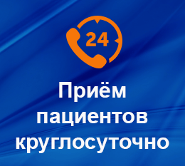
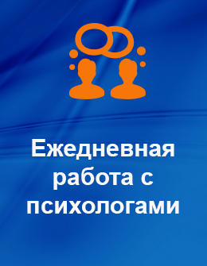
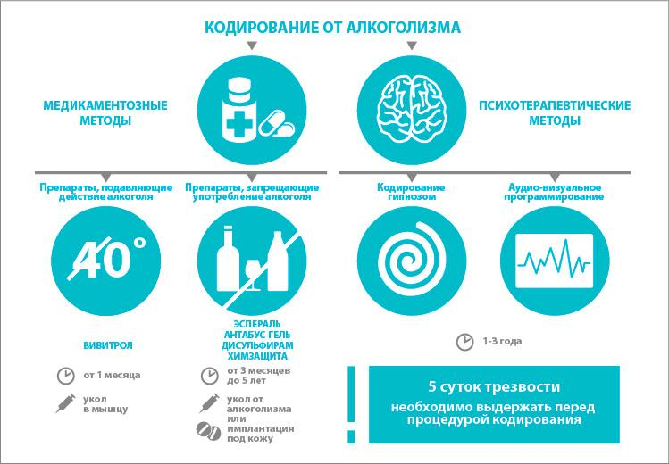
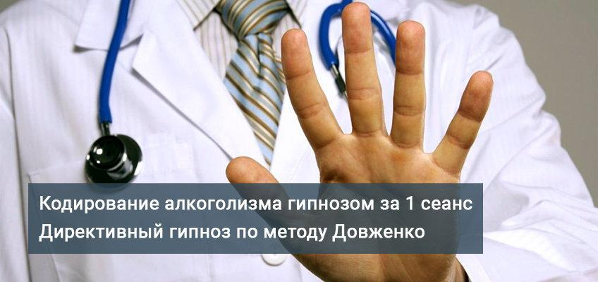
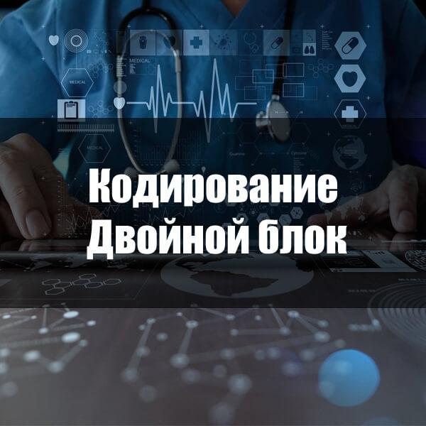
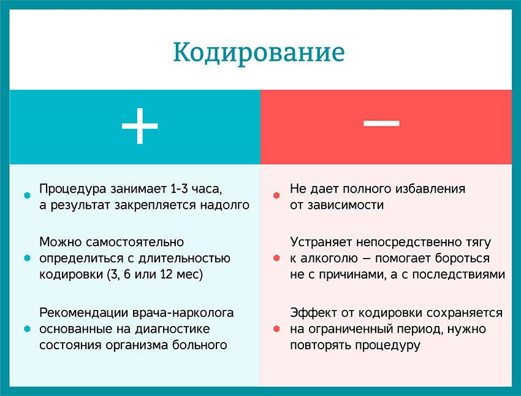
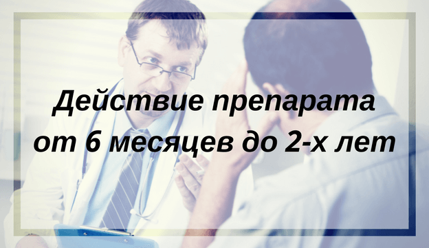

{kind=link}
{kind=link}
{kind=link}
{kind=link}
{kind=link}
{kind=link}
{kind=link}
{kind=link}
{kind=link}
{kind=link}



г. Киев, ул. Лукьяновская 9, офис 73
 Центр современной наркологии «Европа», который имеет множество филиалов по всей территории Украины в целом, и Киевской области в частности, предлагает самые эффективные и проверенные методы кодирования при алкоголизме. Опытные врачи учреждения готовы подобрать для каждого пациента персональную программу терапии, которая позволит избавиться от тяги к алкоголю на длительный промежуток времени. Наши технологии и препараты, которые используются для кодировки, являются самыми надёжными, так как проходят не один этап проверок. Мы не применяем сомнительные препараты для пациентов, а готовы дать стопроцентную гарантию, что эффект от кодировки в нашем центре будет надёжным и продолжительным.
Центр современной наркологии «Европа», который имеет множество филиалов по всей территории Украины в целом, и Киевской области в частности, предлагает самые эффективные и проверенные методы кодирования при алкоголизме. Опытные врачи учреждения готовы подобрать для каждого пациента персональную программу терапии, которая позволит избавиться от тяги к алкоголю на длительный промежуток времени. Наши технологии и препараты, которые используются для кодировки, являются самыми надёжными, так как проходят не один этап проверок. Мы не применяем сомнительные препараты для пациентов, а готовы дать стопроцентную гарантию, что эффект от кодировки в нашем центре будет надёжным и продолжительным.
Кодировка при алкоголизме – одни из самых простых способов побороть зависимость и избежать тяжёлых последствий от влияния алкоголя на организм.
Выбирая наркологическую клинику «Европа» вы гарантируете себе положительный исход любой процедуры, за которую берутся наши специалисты.
Кодировка алкозависимых в Киеве, в условиях клиники «Европа» проводится по двум методам: медикаментозным путём, или с применением психотерапии.
Остались вопросы? Звоните
бесплатная консультация и запись на прием
Наша клиника предлагает пациентам с алкогольной зависимостью доступную по цене и очень эффективную программу медикаментозного кодирования, которая предполагает применение современных препаратов для создания искусственной алкоблокады.
После введения в организм таких препаратов человеку противопоказано употребление любой дозы спиртного, в противном случае, последствия могут быть весьма неприятными.
Среди препаратов, часто используемых для кодировки алкоголиков, стоит отметить «Налтрексон», «Торпедо» и «Эспераль». Для начала необходимо провести лечение запоя в стационаре. Данные алкоблокаторы находятся в свободной продаже на сегодняшний день и имеют вполне доступную цену.
Работники центра современного кодирования «Европа» в Киеве проводят сеансы психологического кодирования алкоголиков с высокими показателями эффективности. Пройти полноценную реабилитацию для алкоголиков соглашается далеко не каждый зависимый. Мы предлагаем уникальные способы создания алкогольной блокады на уровне подсознания человека. Применяя методы психотерапии, пациенту нет необходимости принимать какие-либо лекарственные препараты. Отказ от выпивки в таком случае происходит за счёт формирования негативного отношения к алкоголю на подсознательном уровне.

Этот метод подразумевает комплексное применение эффективных медикаментозных и психологических способов кодирования. Помимо психотерапии, для обеспечения результата, пациенту подбирается алкоблокатор, который обеспечивает несовместимость с этилом. Данный вариант подходит даже для кодировки хронических алкоголиков.
Клиника «Европа» в Киеве предоставила уникальную возможность осуществить процесс кодирования с использованием инновационных технологий — специального устройства с лазерным излучением. Такое устройство использует лазер для воздействия на участки человеческого мозга, и блокирует тягу к выпивке.
Время, которое человек не хочет пить после кодирования, зависит от желания самого пациента и стадии его болезни. Использование конкретного метода кодирования имеет некоторые отличия и преимущества. Если вы соблюдаете все требования и назначения врачей, результат кодирования будет долгим и устойчивым.
Клиника «Европа» в Киеве даёт 100% гарантию эффективности всех используемых методов кодирования. Если мы посмотрим на среднее значение, наши пациенты отказываются от употребления этила на период от нескольких месяцев до нескольких лет. Если болезнь развивается снова, процедуру кодирования можно повторить.
|
ВИД КОДИРОВАНИЯ
|
СРОК ДЕЙСТВИЯ ПРЕПАРАТА
|
|---|---|
|
Метод Довженко
|
от 6 месяцев
|
|
Торпедо
|
от 6 месяцев
|
|
Эспераль
|
6 месяцев
|
|
Наркоблокатор
|
от 3 месяцев
|
|
Алкоблокатор
|
от 3 месяцев
|
|
Тетлонг-250
|
до 3 месяцев
|
Анонимное кодирование от алкоголизма в Киеве – это недорогая, но очень эффективная процедура, которая позволит вам надолго, а может даже навсегда, побороть пагубную тягу к алкогольным напиткам. Мы всегда готовы пойти на компромиссы, поэтому после диагностики предлагаем нашим пациентам несколько доступных по цене вариантов кодировки. Цены на услуги наркологического центра «Европа» в Киеве и Киевской области рассчитаны на людей с разным доходом, поэтому вы можете быть уверены в том, что сможете себе позволить обрести трезвость вместе с нами!
Для получения более детальной информации, вы всегда можете с нами связаться по номеру горячей линии. Наши консультанты с радостью ответят на все вопросы.
| Наименование услуги | Стоимость |
| Вывод из запоя на дому | от 1 500 грн. |
| Кодировка по методу Довженко | от 1 000 грн. |
| Медикаментозный блокатор «Эспераль» | от 5 000 грн. |
| Блокатор «Налтрексон» | от 5 000 грн. |
| Иглорефлексотерапия | 3 650 грн. / 7 сеансов |
| Нейродинамическая аудиопсихокоррекция | 3 000 грн. / 14 сеансов |
| Психолог-психотерапевт | 5 000 грн. / месяц |
| Психиатор-нарколог | 500 грн. / консультация |
| Мотивация на лечение | от 500 грн. |
| Занятие в тренажерном зале с инструктором | 1 000 грн. / месяц |
«Мой отец всегда выпивал, но чувствовал и знал свою меру, мог вовремя остановиться. Но постепенно, алкоголь затмил для него всё остальное. Начались длительные запои, скандалы дома, проблемы на работе. Нужно было действовать незамедлительно. Изучив интернет, мы с мамой решили остановить выбор на клинике «Европа» в Киеве. Обратились на горячую линию, вызвали специалистов на дом, и они отвезли папу в клинику. После обследования, установив степень зависимости, отцу прописали кодировку с применением таблеток. После визита к врачу папа сам понял, что такие действия необходимы для его здоровья, поэтому принимал таблетки строго по назначенной схеме. Уже год он не употребляет и капли алкоголя, а мы верим, что этот результат продержится до конца жизни и больше никогда не увидим родного человека пьяным. Огромная благодарность работникам центра «Европа» за терпение и профессионализм в своей нелёгкой работе.»
Оксана, Киев
«Лечить женский алкоголизм берутся далеко не в каждой клинике. Нам пришлось перебрать немало вариантов, пока мы не нашли клинику «Европа». И не ошиблись. О своём выборе наша семья ни разу не пожалела. Врачи в клинике «Европа» вытащили мою сестру из алкогольного капкана. По рекомендации специалистов клиники, она прошла несколько гипнотических сеансов, а затем пропила курс витаминов, которые поспособствовали нормализации её здоровья после длительного алкогольного распития. После этого, сестра полностью поменяла свой образ жизни. Сейчас, для неё недопустимо выпить даже бокал шампанского. Спасибо врачам за их умение общаться с людьми, а также за большой профессионализм.»
Виктория, Киевская обл.
«Я очень любил пиво. Но в один момент понял, что моё увлечение стало перерастать в зависимость. Я уже не мог и одного вечера без бутылочки любимого напитка. Сделав вывод, что сам я не поборю эту тягу, решил обратиться к профессионалам. В клинике «Европа» мне предложили несколько вариантов лечения пивного алкоголизма, но совместно с врачами мы остановились на кодировке. После укола Налтрексона я полностью отказался от пива и любых алкогольных напитков. Сейчас для меня алкоголь — вовсе не расслабление, а наоборот, вызывает какое-то напряжение внутри. Очень благодарен врачам в клинике «Европа» за их разумный подход, и за то, что помогли мне в трудную минуту.»
Виктор, Киев
«После нескольких лет алкогольного разгульства, я понял, что мне необходима помощь врачей. Было конечно стыдно и неловко обращаться в наркологическую клинику, но для себя я больше никакого выхода из ситуации не видел. Обратился в центр «Европа». Сначала врачи провели обследование моего организма, при котором были выявлены проблемы в работе печени и почек. После этого предложили кодировку, с применением препарат «Эспераль». Процедуру кодирования проводили в клинике, после чего, осмотрев меня, врачи отпустили меня домой. Я не пью уже больше полутора лет, моё здоровье значительно улучшилось, во мне теперь намного больше сил! Я рад, что обратился к профессионалам, которые действительно помогли, а не просто взяли деньги.»
Иван, Киев